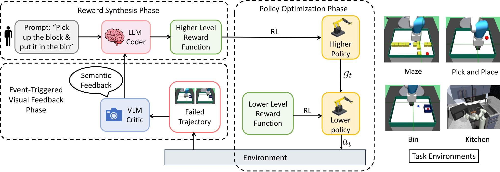
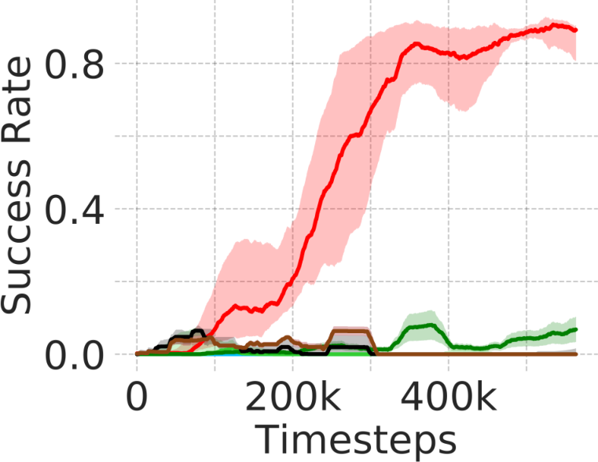

Training Fast Robot Policies with Slow Foundation Models
论文笔记: Training Fast Robot Policies with Slow Foundation Models
值得记住的核心：让大模型看机器人哪里失败，再修改训练奖励；部署只留下小型控制策略。 VGRS 的价值在于把视觉诊断接入 Language-to-Reward 的反馈闭环。它不是把 VLA 权重压缩成小模型，也不是让机器人上线后仍能随时理解新指令。
本文最需要分开的三件事是：系统成功率提高、视觉反馈本身的贡献、策略推理速度。第一项有实验支持，第二项的对照仍不充分，第三项不能直接等同于真机控制频率。
1. 背景信息
- 作者与机构：Utsav Singh、Amrit Singh Bedi（UCF），Pramit Bhattacharyya（IIT Kanpur），Vinay P. Namboodiri（University of Bath）。
- 版本与发表：本笔记依据 arXiv v7 全文及附录，版本日期 2026-07-22；论文首页注明 IROS 2026 接收。不混用该 arXiv 编号的早期版本。
- 阅读范围：正文、Algorithm 1、Table I、奖励代码和 prompt 附录；未运行作者代码或复现实验。下文 § 和图号均指 v7。
2. 关键问题：奖励知道终点，却不知道为什么过不去
Golden Case：迷宫的出口在左边，目标却在右下角。 §IV-E 的机械臂夹爪从桌面上方出发，水平墙挡住直接路线，唯一开口在最左侧。只鼓励向终点靠近，可能让策略反复撞向墙的右侧；正确路线反而要先远离终点。
这暴露了静态语言奖励的局限：任务描述“去右下角”没有充分表达障碍物拓扑。另一个极端是让大模型每一步直接给动作，但推理延迟和坐标精度又成为控制约束。
VGRS 选择在训练阶段补充缺失信息：看失败轨迹 → 找物理障碍 → 把诊断写进奖励 → 重新优化策略。已有 Eureka 会迭代奖励，Auto MC-Reward 也会分析轨迹；因此“自动改奖励”本身不是新贡献。本文强调的是连续机器人控制中，利用失败帧的视觉诊断修订可执行奖励（§II）。
注意：以上是正文对迷宫案例的机制叙述。附录所展示的初始奖励其实只有稀疏阈值项，并没有连续距离惩罚；这影响该案例的因果解释，见 §5。
3. 关键方法：视觉诊断修改高层奖励，RL 负责动作精度
沿用迷宫案例，一次闭环如下（§III-C–E、Algorithm 1）：
- 初始化奖励：LLM 接收任务、坐标约定和环境 API，输出 Python 奖励函数。它写的是评分规则，不是机械臂动作序列。
- 分层执行：高层策略每隔 $k$ 个环境步提出子目标 $g_t$；低层策略接收状态和子目标，每步输出连续动作。迷宫中子目标是中间位置。
- 停滞触发诊断：成功率移动平均不再改善、且仍低于阈值时，取最近失败轨迹的若干帧，让冻结的 VLM 描述物理失败原因。
- 修改奖励：LLM 接收诊断、原任务、API 和旧奖励代码，添加连续惩罚。正文称迷宫诊断引导策略绕向左侧开口；附录实际给出的惩罚更简单，下文单独核对。
- 继续学习：使用新奖励重新计算高层 replay buffer 中采样 transition 的奖励，再更新策略。部署时只运行高低两层网络。

图中最关键的是左下角反馈箭头：失败轨迹进入 VLM，文字诊断进入 LLM，改动发生在高层奖励函数。右侧低层策略仍承担精确控制；它不是由 VLM 输出坐标直接替代的。图片来自原论文 Figure 2，原文许可 CC BY-NC-SA 4.0。
为什么要把“看失败”和“写代码”分开？
作者使用 llama-4-scout-17b-16e-instruct 诊断视觉失败，使用 llama-3.3-70b-versatile 写奖励；基础模型不在这一过程中微调，真正学习的是策略和 critic（§IV-A）。作者观察到单 VLM 写代码会出现 API 幻觉、维度错误等，但证据主要是代码案例，不能据此推断所有 VLM 都不适合写奖励。
Prompt 也提供了明显的人工结构（Appendix A-F）：视觉 critic 被要求只描述物理原因，输出限制为两句话，原文短句为 “Keep it to 2 sentences.”；LLM 则被明确要求添加 dense penalty。迷宫还提供门的位置接口，并指定连续奖励乘以 0.1。因此，奖励变稠密既来自反馈，也来自显式 prompt 设计，不能全部归功于模型自主发现。
什么在训练，奖励变化怎样进入训练？
高低层均使用 SAC；actor/critic 是三层、每层 512 单元的 MLP。高层优化最新生成的任务奖励，低层优化到达子目标的距离型信号（§III、§IV-A、Table I）。关键更新可压成：
其中 $\mathcal T$ 是任务，$\mathcal P_{\mathrm{env}}$ 是 API 上下文，$\mathcal F_m$ 是失败解释。这是离散的代码更新，不是通过 VLM 反向传播。高层历史样本按当前 $R_H^m$ 重标，避免同一训练批次混用不同版本的奖励。
作者认为奖励摆脱对低层即时完成能力的直接依赖，可以改善 HRL 稳定性。但这不意味着训练全程 stationary：奖励代码会更新，低层动作能力也在变；relabeling 只能处理其中一部分不一致。
复现时必须核实：§III-E 写低层奖励为到达阈值外的 $-1$，Algorithm 1 第 14 行却使用负欧氏距离。停滞窗口、近零梯度判据和成功率阈值也未在 Table I 中给出具体取值，不能仅凭伪代码假设已有完整配方。
4. 数据与设置：有结构化状态，也有少量示范
评估包括 maze、pick-and-place、bin、Franka kitchen，主训练曲线使用 5 个随机种子。训练数据主要来自仿真交互；§IV-A 明确对 pick-and-place、kitchen 等困难任务加入单条示范和低层模仿目标，maze 不用示范。因此不是完全零示范学习。
部署 MLP 接收结构化状态，而不是直接从原始图像输出动作。Appendix A-C 中，maze 输入含夹爪位置、迷宫数组和目标；抓取任务含夹爪/物体位置、相对位置及速度。视觉接地发生在奖励反馈环节，不能误读成部署策略本身拥有通用视觉语言理解能力。
Kitchen 定义存在文字差异：Appendix A-B 说打开微波炉，A-F prompt 则要求开微波炉后再转燃气旋钮。实际评估成功条件 [?]，需要实现或进一步说明确认，不能直接称为完整厨房任务套件。
5. 关键结果：系统有效，但独立归因与速度口径要收紧
成功率提升是否明显？
Figure 3 将 VGRS 与 L2R、SAGA、RAPS、HAC、HIER、DAC 比较。maze 上是有竞争力；困难操作任务中差距更明显。L2R 在这里被改成 SAC 控制器，不是原方法的 MPC；同时它是单层、静态奖励。因此对 L2R 的提升包含层级结构和奖励反馈两个变化。

红色 VGRS 曲线末端约为 0.9，其余曲线接近底部；阴影是跨 5 seeds 的标准差。这里使用图上近似读数，不把它写成精确测量。图片是原 Figure 3b 子图，共用图例见原文 Figure 3，许可 CC BY-NC-SA 4.0。该图支持系统在这一训练设置下有明显优势，不应与下面另一处报告的 81% 混成同一统计结果。
| 要检验的主张 | 原文报告 | 支持范围与边界 |
|---|---|---|
| 相比直接 VLA 控制的部署取舍 | §IV-F / Fig. 1：pick-and-place，VGRS 81%，SmolVLA 用 100 条专家示范微调后 29%；分别约 500 Hz 与 50 Hz | 相差 52 个百分点，推理频率约 10 倍；存在动作接口迁移与训练方式差异，不能外推为普遍优于 VLA |
| 仿真策略能否迁移到实物 | §IV-G：Dobot Magician + Realsense D435；每项任务 5 组 × 10 次；pick-and-place、bin 均平均 60%，L2R 未完成任务 | 原文分别报 variance 0.07、0.03，未清楚定义估计口径；未给置信区间 |
| “快”是否体现为真机 500 Hz | §IV-G：网络推理约 500 Hz，SDK 将端到端循环限制为 20 Hz（50 ms） | 证明策略推理轻量，不能声称实物动作闭环达到 500 Hz |
论文没有充分交代推理 benchmark 的硬件、计时边界及训练总成本。应将 500 Hz 视作作者报告的推理结果，而非可跨硬件复用的性能保证。
视觉反馈究竟贡献了什么？
Figure 5 的静态奖励/动态奖励案例展示了失败后修改奖励能改变路线，是直观证据。但它同时改变了是否迭代、是否变稠密、是否使用视觉。缺少同一 HRL、相同调用预算下“仅用数值/符号反馈迭代”的对照，因此没有隔离视觉诊断的增量价值。Figure 4 的平均奖励曲线也不能单独证明诊断正确：不同 reward 的尺度和定义本来就不同。
更具体的问题在 Appendix A-E：
- 正文称静态方法连续最小化到终点的距离；展示代码实际只返回 $-\mathbf1[d>0.05]$。
- 正文称动态方法加入“墙右侧的区域惩罚”；展示代码却是在所有位置加上 $-0.1|y-1|$，没有区域判断，也没有过墙后关闭的条件。
- 展示的 VLM 反馈说被墙挡住，却没有明确指出“左侧开口”；这与正文更强的叙述并不完全对应。
这不等于证明结果无效，但说明案例文字、诊断输出、实际奖励代码尚未形成严密证据链。若复现，首先应确认执行的奖励版本，以及到达目标后该项是否还会错误地拉回策略。
单 VLM 对照也主要给代码样例，未报告多次生成的编译率、正确率或下游成功率；Appendix A-D 的“pick-and-place”样例还描述了迷宫墙体。它说明有失败风险，尚不能量化分工架构的稳定收益。
6. Insights：下一步最值得验证什么
1. 最有价值的实验是“相同迭代预算，换反馈内容”。 当前完整系统改善明显，但静态 L2R 对照不能拆出视觉贡献。我会固定 HRL、初始奖励、示范与调用次数，比较真实失败帧、仅状态统计、打乱帧和人工诊断；同时记录任务成功率与奖励代码有效率。这能判断视觉提供的是缺失的几何信息，还是多轮改奖励的附带收益。
2. 奖励是可检查的中间产物，这比“解释听起来合理”更重要。 迷宫代码的全局坐标惩罚揭示：正确识别障碍不保证写出正确 shaping。可迁移的工程模块是为每个奖励版本加入最小状态测试——墙两侧、穿门前后、目标附近——并记录奖励差异和回退条件。本文给出了产生修订的闭环，但未展示充分的自动验收机制。
3. 慢推理换快执行，代价是任务适应发生在训练阶段。 §V 承认全新语言任务需要重新训练；遮挡和触觉类失败也可能超出图像诊断能力。我认为这种路线适合重复执行、任务稳定、能仿真训练的操作单元。若目标是开放环境中不断接收新指令，应把重新训练耗时也列入评估，不能只比较每步推理延迟。
7. 连接与发现
- ENPIRE-Agentic-Robot-Policy-Self-Improvement-in-the-Real-World-物理自主研究闭环：可对照“反馈闭环修改什么、在哪里闭合”。本篇修改训练奖励，并将仿真策略迁移到实物；连接笔记用于继续比较，不作为本篇实验事实来源。